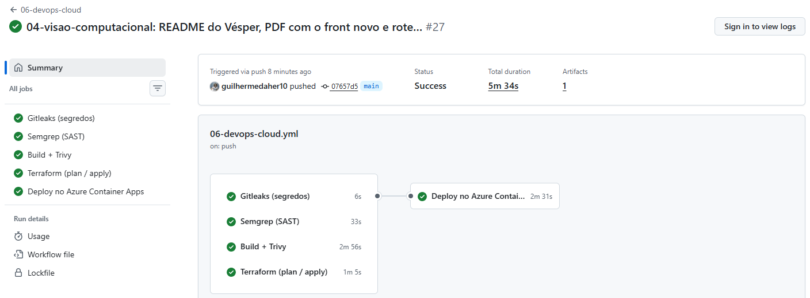
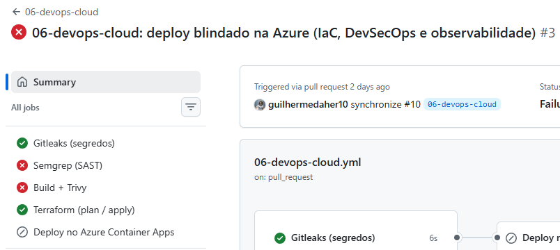
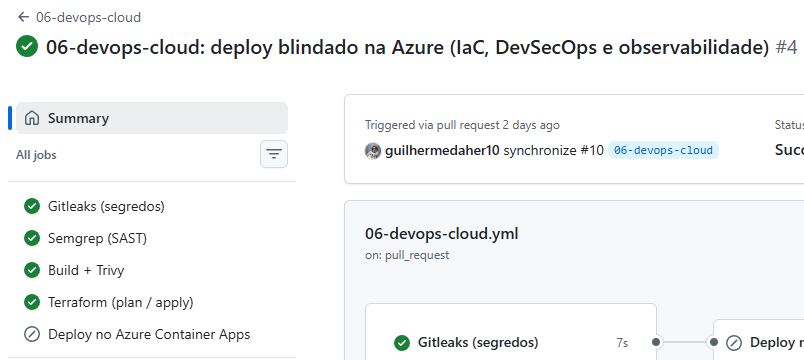
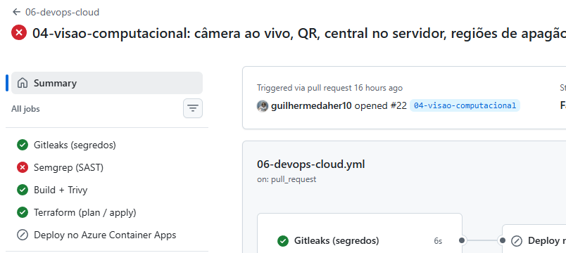
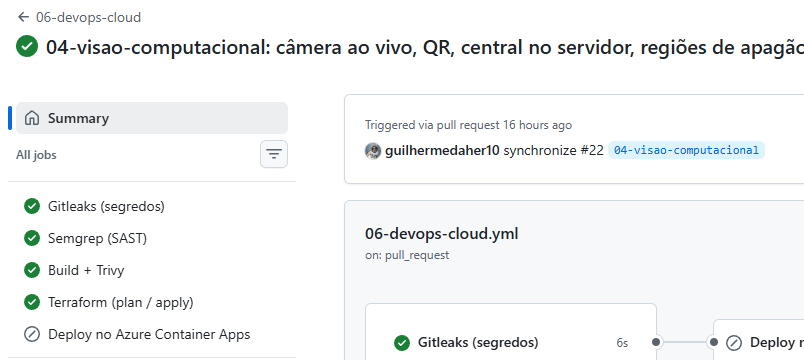
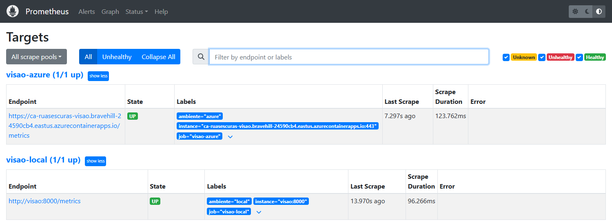
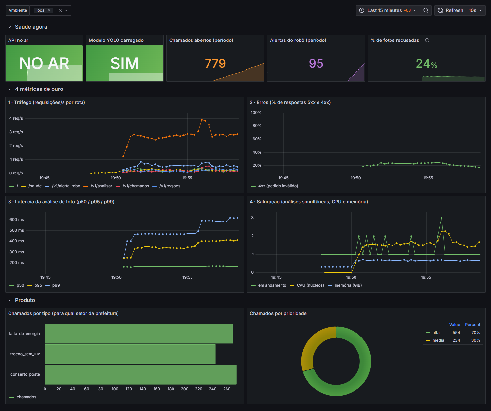
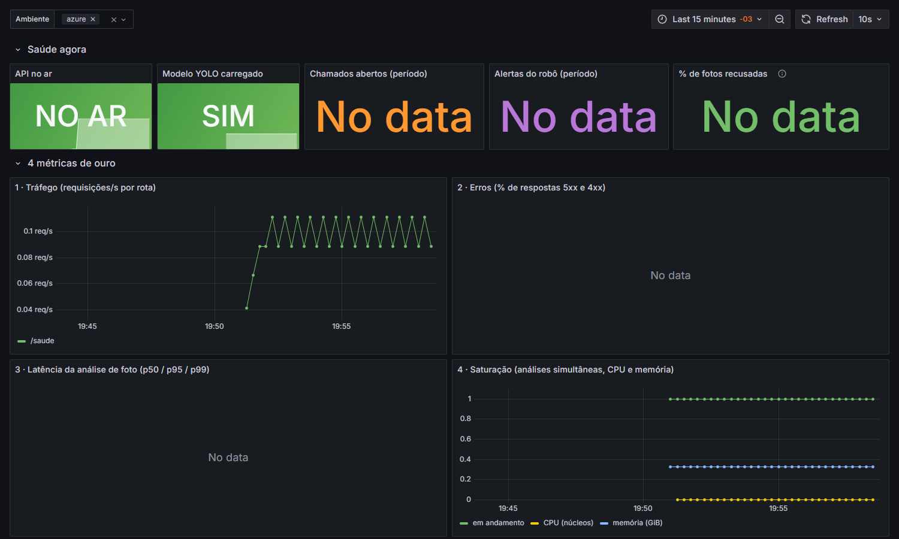
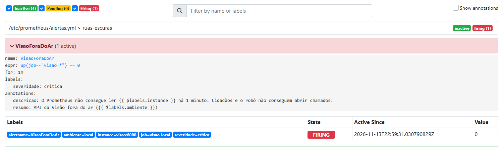
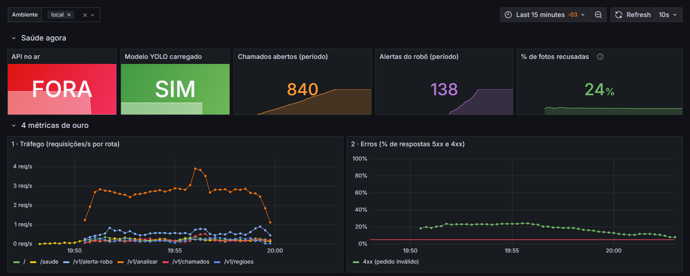

O MVP no ar por um pipeline DevSecOps, em nuvem criada por código e com observabilidade
| Nome | RM | Papel no projeto |
|---|---|---|
| Guilherme Daher | 98611 | DevOps e Cloud · Visão Computacional |
| Gabriel Freitas | 550187 | Generative AI |
| Heitor Nobre | 551539 | Maker Lab |
| Vinicius Yamashita | 550908 | RPA |
| Lucca Alexandre | 99700 | Big Data · Negócio e Pitch |
O Vésper liga quem está numa rua escura, ou sem luz no bairro, a quem pode resolver. O cidadão abre o site
pelo celular, filma alguns segundos e o chamado chega à central já confirmado por visão computacional, com protocolo,
prioridade e o órgão responsável (iluminação pública da prefeitura ou distribuidora de energia). Nesta disciplina, o
papel é a Produção: colocar esse MVP no ar sem ninguém clicar em botão. Cada push na main
passa por um pipeline que barra segredo vazado, código inseguro e dependência vulnerável; só então a nova versão é
publicada na Azure, numa infraestrutura descrita em Terraform, e o Grafana mostra a saúde do sistema.
| Critério (14 pts) | O que foi feito | Evidência |
|---|---|---|
| Container e IaC (5) | Dockerfile python:3.11-slim, usuário sem privilégios (uid 10001), sem segredo; docker compose sobe Visão, GenAI, Ollama, Prometheus e Grafana. Toda a nuvem em Terraform, state remoto num Storage sem chave, .tfvars fora do Git e nenhuma porta de administração (serverless, só HTTPS 443) | Seção 2 |
| Pipeline DevSecOps (4) | GitHub Actions a cada push/PR: Gitleaks, Semgrep, build + Trivy, Terraform e deploy com OIDC (sem senha). Segredos em GitHub Secrets. Duas execuções barradas e corrigidas (Trivy: 61 vulnerabilidades → 0; Semgrep: hash inseguro → 0) | Seção 3 |
| Observabilidade (3) | Prometheus + Grafana local lendo o MVP publicado na Azure: painel com as 4 métricas de ouro e métricas do produto; 5 regras de alerta e um alerta disparado de propósito | Seção 4 |
| Documentação (2) | Diagrama da arquitetura, responsabilidade compartilhada, onde ficam os dados pessoais (LGPD), custo estimado e real, README reproduzível | Seções 1 e 5 |
Por que Container Apps. É serverless: não existe máquina virtual, logo não existe porta de administração (SSH ou RDP) para ficar exposta. A única entrada é HTTPS 443 com certificado gerenciado pela Microsoft. Escala a zero quando ninguém usa (custo perto de zero) e sobe sozinho com o tráfego, até 2 réplicas.
Terraform × pipeline. O Terraform cria e mantém a infraestrutura; a versão em produção é trocada pelo
pipeline (az containerapp update com a imagem marcada pelo commit). O Terraform ignora a imagem depois de
criada, então um terraform apply nunca volta a produção para uma versão antiga.
Um problema real resolvido. Em nov/2026 a Azure passou a criar ambientes novos de Container Apps no modo
Express (preview) quando o pedido não diz o modo. Nesse modo o registro privado é ignorado e o container não
consegue puxar a imagem com identidade gerenciada (erro BuildFailed ... registryCredentials). Como o
provedor azurerm 4.x ainda não tem o campo, o ambiente é declarado pelo provedor oficial azapi
com environmentMode = "WorkloadProfiles" e o perfil Consumption, que continua serverless.
| Boa prática | Como está no Dockerfile |
|---|---|
| Imagem base mínima | python:3.11-slim; PyTorch na versão só CPU (cerca de 1 GB menor que a com CUDA); .dockerignore deixa de fora dados, testes, notebooks, resultados e .env |
| Usuário não root | useradd --uid 10001 app e USER app: mesmo que alguém explore a aplicação, não é root no container |
| Sem segredo na imagem | Nenhuma chave no Dockerfile nem nos arquivos copiados; tokens chegam por variável de ambiente (Container Apps secrets) em tempo de execução. O Gitleaks e o Semgrep conferem a cada push |
| Correções de segurança | apt-get upgrade no build e versões fixas sem CVE (Pillow 13, torch 2.10, setuptools ≥ 80), exigidas pelo Trivy (ver 3.3) |
| Saúde | HEALTHCHECK chamando /saude |
O tamanho final (cerca de 2,6 GB) vem quase todo do PyTorch e das bibliotecas de visão computacional, necessárias para rodar o YOLO26 em CPU; o código e os dois modelos ocupam menos de 30 MB.
docker composeUm comando sobe o produto integrado e monitorado no PC: Visão (API + site), assistente de IA generativa (GenAI) com
Ollama, Prometheus e Grafana. Os serviços da equipe rodam endurecidos: read_only, cap_drop: ALL
e no-new-privileges.
$ docker compose up -d --build $ docker compose ps SERVICE IMAGE STATUS PORTS genai ruas-escuras/genai:local Up 4 minutes (healthy) 0.0.0.0:8001->8001/tcp grafana grafana/grafana:11.3.1 Up About a minute 0.0.0.0:3000->3000/tcp ollama ollama/ollama:0.40.16 Up 5 minutes 11434/tcp prometheus prom/prometheus:v2.55.1 Up 5 minutes 0.0.0.0:9090->9090/tcp visao ruas-escuras/visao:local Up 4 minutes (healthy) 0.0.0.0:8000->8000/tcp $ docker compose exec visao id uid=10001(app) gid=10001(app) groups=10001(app) $ docker compose exec visao touch /app/teste touch: cannot touch '/app/teste': Read-only file system $ curl -s localhost:8000/saude {"status":"ok","modelo_carregado":true,"modelo":{"nome":"best","versao":"dev"},"erro":null,"genai":{"configurado":true,"no_ar":true,"url":"http://genai:8001"},"versao_contrato":"1.5"} # usuário sem privilégios, sistema de arquivos imutável e a Visão já conversando com o GenAI dentro da rede do compose
Todos os recursos de produção estão em 06-devops-cloud/terraform/
(provedores azurerm 4.x e azapi 2.x). O state fica fora do repositório, num Storage
Account que só aceita login Entra ID, e os .tfvars são ignorados pelo Git:
$ az resource list -g rg-ruasescuras -o table Nome Tipo ---------------------- ------------------------------------------------ log-ruasescuras-foxo70 Microsoft.OperationalInsights/workspaces id-ruasescuras-visao Microsoft.ManagedIdentity/userAssignedIdentities acrruasescurasfoxo70 Microsoft.ContainerRegistry/registries cae-ruasescuras-wp Microsoft.App/managedEnvironments ca-ruasescuras-visao Microsoft.App/containerApps stcentralfoxo70 Microsoft.Storage/storageAccounts $ az storage account list -g rg-ruasescuras-tfstate Nome ChaveCompartilhada TLS --------------------- -------------------- ------ struasescurastfe0cab8 False TLS1_2
$ git check-ignore -v (arquivos sensíveis fora do Git) .gitignore:20:*.tfvars terraform/terraform.tfvars terraform/.gitignore:2:*.tfplan terraform/central.tfplan .gitignore:11:.env 06-devops-cloud/.env .gitignore:11:.env 04-visao-computacional/.env .gitignore:17:.terraform/ terraform/.terraform $ git ls-files | grep -E "tfvars$|tfstate|\.env$" (nenhum arquivo sensível versionado) # versions.tf: backend "azurerm" com use_azuread_auth = true; # nomes do state passados por -backend-config, nada da # assinatura fica no código
Não há VM nem regra de rede com SSH (22) ou RDP (3389): o único ponto de entrada é o ingress HTTPS do Container Apps. A consulta abaixo, feita direto na Azure, mostra entrada só por HTTPS, sem portas extras e com escala a zero:
$ az containerapp show -n ca-ruasescuras-visao -g rg-ruasescuras entrada_externa: true so_https: true # allowInsecure = false porta_alvo: 8000 # interna; fora só 443 portas_extras: null # nenhuma porta além do HTTPS replicas_min: null # = 0: escala a zero sem uso replicas_max: 2 identidade: UserAssigned imagem: acrruasescurasfoxo70.azurecr.io/visao:07657d517ced revisao: ca-ruasescuras-visao--0000009
$ az role assignment list --assignee <identidade da Visão> --all Papel Recurso ------------------------------ ---------------------------- AcrPull …/registries/acrruasescurasfoxo70 Storage Table Data Contributor …/storageAccounts/stcentralfoxo70 $ az role assignment list -g rg-ruasescuras (pipeline, OIDC) Papel Principal Escopo ----------- ---------------- --------------------------- Contributor ServicePrincipal …/resourceGroups/rg-ruasescuras $ az storage account show -n stcentralfoxo70 chave_compartilhada: false tls_minimo: TLS1_2 acesso_publico_blob: false so_https: true
Menor privilégio: a identidade do container só pode puxar imagens do registro e escrever na tabela da central; a identidade do pipeline é Contributor apenas no grupo da aplicação e não pode conceder permissões.
O workflow .github/workflows/06-devops-cloud.yml
roda a cada push e pull request. Quatro portões correm em paralelo; o deploy depende de todos
(needs: [gitleaks, semgrep, build, terraform]): qualquer um vermelho, nada é publicado.
| Etapa | O que barra | Na PR / na main |
|---|---|---|
| Gitleaks 8.24 | Segredo vazado nos commits do push/PR (binário com checksum conferido) | roda / roda |
| Semgrep | Código inseguro: 263 regras de Python, Dockerfile, Terraform e segredos (--error) | roda / roda |
| Build + Trivy 0.57 | Vulnerabilidade HIGH/CRITICAL com correção na imagem; configuração insegura no Terraform | roda / roda |
| Terraform 1.17 | Mudança de infraestrutura inesperada (plan na PR, apply na main), login por OIDC | plan / apply |
| Deploy | Publica no ACR, troca a versão no Container Apps e faz smoke test em /saude e /v1/chamados | — / roda |

# trechos do log desta execução (gh run view 43520572844 --log) Gitleaks 1 commits scanned. no leaks found Terraform Plan: 0 to add, 1 to change, 0 to destroy. Apply complete! Resources: 0 added, 1 changed, 0 destroyed. Deploy ARM_CLIENT_ID: *** ARM_USE_OIDC: true # segredo mascarado; login sem senha Deploy {"status":"ok","modelo_carregado":true,...,"versao_contrato":"1.5"} Deploy central respondendo Deploy no ar: https://ca-ruasescuras-visao.bravehill-24590cb4.eastus.azurecontainerapps.io
$ gh secret list (só os nomes: o valor nunca aparece)
ALERTA_EMAIL 2026-11-12
AZURE_CLIENT_ID 2026-11-12
AZURE_SUBSCRIPTION_ID 2026-11-12
AZURE_TENANT_ID 2026-11-12
METRICS_TOKEN 2026-11-12
TFSTATE_RG 2026-11-12
TFSTATE_STORAGE 2026-11-12
Não existe senha da Azure guardada: com OIDC, o GitHub prova quem é a cada execução e
recebe um token de curta duração, válido só para este repositório (branch main e pull requests). Os secrets guardam
identificadores (não senhas), o e-mail do orçamento e o token que protege /metrics. No log, todos
aparecem como ***.


# antes (gh run view 43156255620 --log-failed) Trivy debian: Total: 2 (HIGH: 2, CRITICAL: 0) ex.: zlib1g CVE-2026-85091, heap buffer overflow Trivy python: Total: 59 (HIGH: 49, CRITICAL: 10) ex.: pillow 12.3.0 CVE-2026-112393 CRITICAL Semgrep 3 Code Findings (3 blocking) md5/sha1 em scripts de coleta de dados # correção: apt-get upgrade no build; Pillow 13.0.0, torch 2.10, # setuptools >= 80, wheel >= 0.46.2; sha256 no lugar de md5/sha1 # depois (gh run view 43156845661 --log) Trivy Total: 0 (HIGH: 0, CRITICAL: 0) Semgrep Findings: 0 (0 blocking)


# antes (gh run view 43377489191 --log-failed): central de chamados e regiões ❯❱ insecure-hash-algorithm-md5 ❰❰ Blocking ❱❱ 80┆ r = int(hashlib.md5(str(h).encode()).hexdigest(), 16) % 100 ❯❱ insecure-hash-algorithm-sha1 ❰❰ Blocking ❱❱ 102┆ id="REG-" + hashlib.sha1(",".join(protocolos).encode()).hexdigest()[:6] Ran 263 rules on 90 files: 2 findings. # correção: sha256 nos identificadores; onde o hash só sorteia a divisão # treino/teste, usedforsecurity=False com justificativa # depois (gh run view 43378735906 --log) Ran 263 rules on 90 files: 0 findings.
O Prometheus e o Grafana rodam no PC (via docker compose) e leem o /metrics do MVP
publicado na Azure, protegido por token (scripts/alvo-azure.ps1 aponta o alvo a partir do
terraform output). A API expõe as métricas pelo cliente oficial do Prometheus, só com contagens
agregadas: nenhum dado pessoal.
| Métrica de ouro | Consulta no painel | Alerta |
|---|---|---|
| Tráfego | sum(rate(http_requisicoes_total[5m])) por rota | — |
| Erros | % de respostas 5xx sobre o total | TaxaDeErrosAlta: > 5% por 2 min |
| Latência | p50/p95 de http_duracao_segundos (histograma) | LatenciaAlta: p95 da análise > 3 s por 5 min |
| Saturação | http_requisicoes_em_andamento (escala com 10 por réplica) | SaturacaoAlta: > 8 por 2 min |
| Disponibilidade e produto | up, modelo carregado, chamados por tipo e prioridade, vídeos, central | VisaoForaDoAr (1 min) e ModeloNaoCarregado |

docker compose. Ambos UP
local sob carga de teste (4 clientes simultâneos enviando fotos, consultas e alertas do robô, sem abrir chamados reais): tráfego por rota, 4xx de pedidos inválidos de propósito, latência p50/p95/p99 da análise e saturação (análises simultâneas, CPU e memória)
azure: o MVP publicado está NO AR, com o modelo carregado, lido pela internet a cada 15 s. Não foi gerada carga artificial na produção; o tráfego mostrado é o real do momentoPara provar que o alerta funciona, a Visão local foi parada de propósito (docker compose stop visao). Em
cerca de 1 minuto, a regra VisaoForaDoAr passou de pending para firing, e o painel mostrou a
API fora do ar. Com docker compose start visao, o alerta foi resolvido sozinho.

VisaoForaDoAr em FIRING (severidade crítica), ativo desde 22:59:31 UTC, 1 minuto depois da queda; os outros 4 alertas seguem inativos
Uma observação real: com escala a zero, a primeira requisição depois de um tempo parado leva cerca de 20 s
(cold start: a réplica sobe e carrega os dois modelos). O primeiro scrape do Prometheus chegou a falhar por
timeout antes de a réplica acordar. É uma troca consciente: no dia a dia, o custo perto de zero
compensa; para uma demonstração sem espera, basta subir visao_min_replicas para 1 no Terraform
(cenário B da seção 5.3).
| Quem | Cuida de |
|---|---|
| Microsoft (Azure) | Datacenter, hardware, rede física, hypervisor, sistema operacional dos nós do Container Apps, patch da plataforma, certificado TLS do domínio azurecontainerapps.io, disponibilidade e criptografia em repouso do Storage |
| Equipe | Código e dependências, imagem do container (base, pacotes, usuário), configuração (Terraform), quem acessa (RBAC, OIDC, identidade gerenciada), segredos, dados que trafegam e logs que geramos, monitoramento e resposta a alertas, custo |
Em Container Apps (PaaS/serverless) a fronteira sobe em relação a uma VM: o sistema operacional e os patches dos nós passam para a Microsoft; a imagem e tudo o que está dentro dela continuam sendo da equipe, por isso o Trivy no pipeline.
| Dado | Onde fica | Tratamento |
|---|---|---|
| Foto e vídeo do cidadão | memória do container, só durante a análise | Nunca armazenados; rostos borrados antes de qualquer retorno; EXIF descartado (só a exposição é lida); o vídeo temporário é apagado logo após a análise |
| Chamado (tipo, prioridade, local, status) | Azure Table chamados (East US) | Sem nome, CPF, telefone ou imagem; protocolo aleatório; acesso só pela identidade gerenciada; Storage sem chave compartilhada |
| Localização (GPS) | no chamado | Necessária para o conserto (finalidade); não vai para métricas nem para logs |
| “Meus protocolos” | navegador do cidadão (localStorage) | Fica só no aparelho dele; não há cadastro |
| Métricas | Prometheus (PC, 7 dias) | Só contagens agregadas por rota, tipo e prioridade |
| Logs | Log Analytics (30 dias) | Logs de acesso do container, sem corpo da requisição |
| E-mail do alerta de custo | secret ALERTA_EMAIL e state do Terraform | Fora do Git; state acessível só por Entra ID |
Preços públicos de tabela (pay-as-you-go, East US, nov/2026; US$ 1 = R$ 5,50). Assinatura Azure for Students,
com limite de gasto: quando o crédito acaba os recursos param, sem cobrança. Detalhes em
docs/custo.md.
| Recurso | Como cobra |
|---|---|
| Container Apps | por segundo de vCPU/GiB; cota grátis de 180 mil vCPU·s e 2 milhões de requisições por mês |
| Container Registry Basic | ~US$ 5/mês |
| Log Analytics | 5 GB/mês grátis; teto de 0,5 GB/dia |
| Storage (state e central) | centavos (KB de dados) |
| Orçamento, identidade, OIDC | grátis |
| Cenário | US$/mês | R$/mês |
|---|---|---|
| A. Escala a zero, ~1.000 análises/mês | ~5 | ~28 |
| B. Sempre acordada (1 vCPU, 2 GiB) | ~27 | ~150 |
| B'. Sempre acordada (0,5 vCPU, 1 GiB) | ~16 | ~90 |
| Real até 13/11 (orçamento da Azure) | 1,40 | ~7,70 |
$ az consumption budget list -g rg-ruasescuras -o table Nome Valor Periodo Gasto_atual --------------------- ------- --------- ------------------ orcamento-ruasescuras 100.0 Monthly 1.3952804490491806
Proteções contra gasto inesperado: escala a zero por padrão e teto de 2 réplicas; orçamento com e-mail em 50%,
80% e 100% do real e em 100% do previsto; cota diária no Log Analytics; e, depois da avaliação,
terraform destroy e remoção do grupo do state.
O README da pasta 06
explica, passo a passo: (1) subir tudo no PC com docker compose up -d --build; (2) preparar a nuvem uma vez
com scripts/bootstrap-azure.ps1 (state + identidade OIDC) e terraform apply, e cadastrar os
secrets; (3) monitorar a nuvem pelo Grafana local com scripts/alvo-azure.ps1; (4) disparar um alerta de
propósito; (5) desligar tudo. A Ficha Técnica do Vésper está no
README da raiz.
O Vésper está no ar desde 12/11 e já recebeu 9 publicações automáticas pela main, sem nenhum clique manual no portal. O pipeline mostrou valor de verdade: barrou 61 vulnerabilidades da imagem (10 críticas) e cinco usos de hash inseguro (MD5 e SHA1), em duas ocasiões, antes que chegassem ao cidadão. A infraestrutura é toda código, sem senha guardada, sem porta de administração e com menor privilégio; a observabilidade cobre as 4 métricas de ouro e alerta quando o serviço cai. Como próximos passos, ficam: mover o Prometheus e o Grafana para a nuvem (Azure Monitor gerenciado), assinar a imagem (cosign) e adicionar um ambiente de homologação com aprovação manual antes da produção.